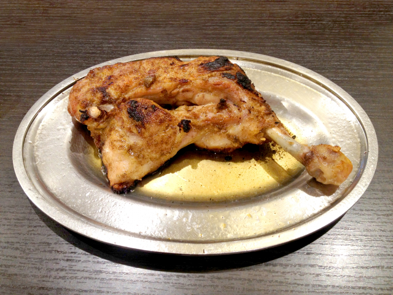
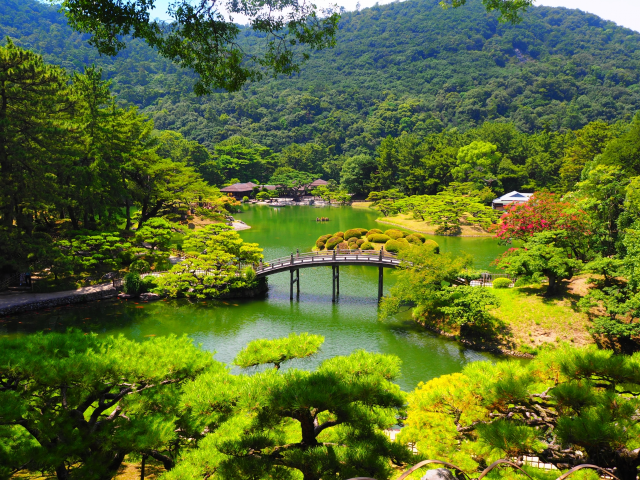
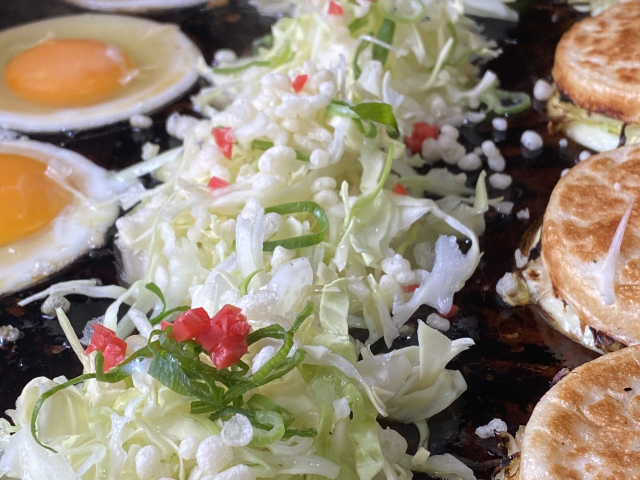
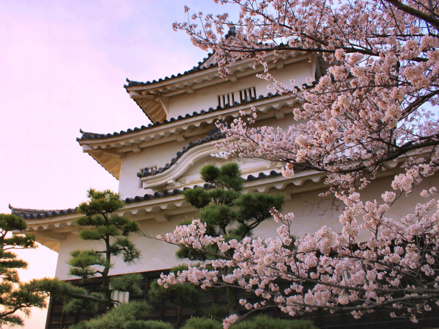
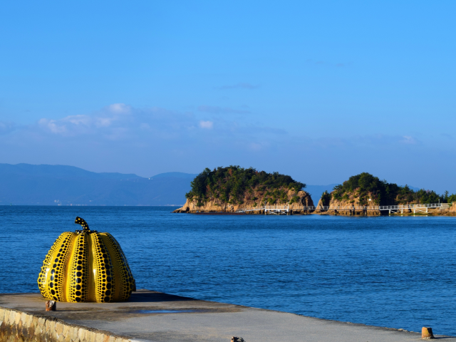

骨付鳥、こんなにうまいとは…
丸亀で食べた骨付鳥、皮パリ中ジューシーでたまらない！
コメントやいいねが多い投稿をピックアップしました

丸亀で食べた骨付鳥、皮パリ中ジューシーでたまらない！

池に映る緑が美しくてずっと眺めてた。癒しの時間だった

おやつ感覚で食べられるのにボリューム満点！また食べたい

桜とお城のコラボが最高すぎた…。香川の春はいいなあ

島歩きしながらアート鑑賞できるって最高の贅沢だよね
暑さも忘れて踊りまくった一日！次も絶対行く！